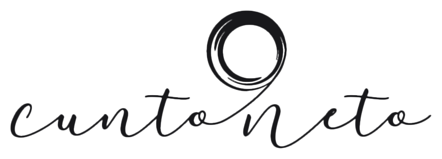

Portfólio
Sobre
Contato
Portfólio
Sobre
Contato
Cuiabá · Mato Grosso
Fotografia Artística
José
Cunto
Cuiabá · Mato Grosso
Acervo — Cuiabá, MT
José Cunto Neto
Fotógrafo — Brasil
Ver Portfólio
↓
Scroll
Portfólio — Acervo
Trabalhos
Cuiabá · Mato Grosso
01
Instantes
02
Ausências
03
Permanências
04
Fragmentos